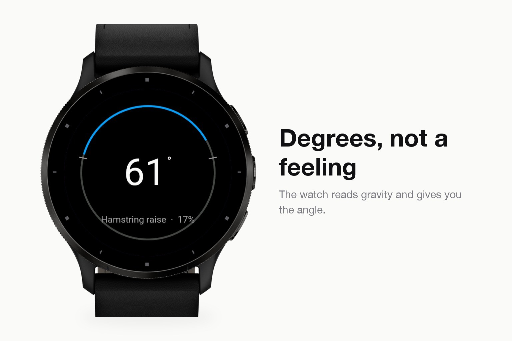
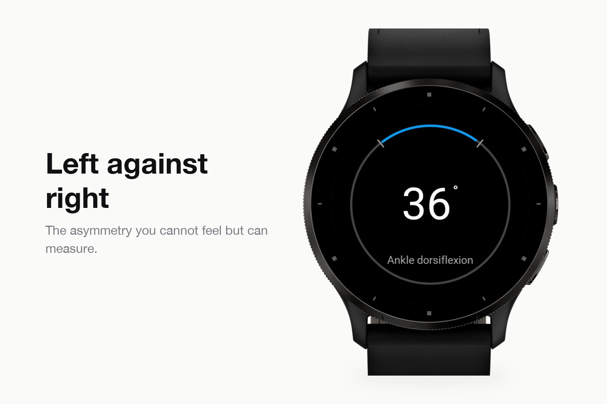
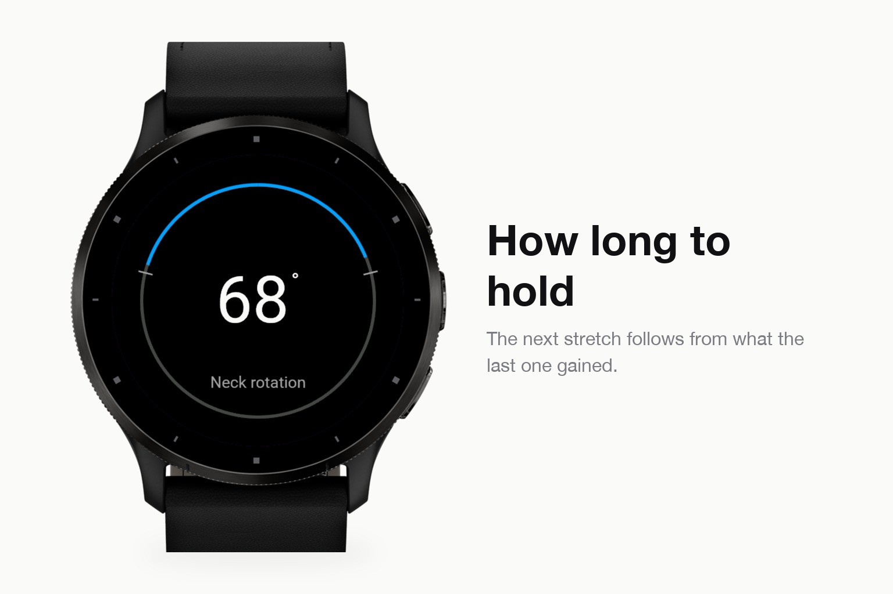

Health & habits · Device app
Range-of-motion tests and a stretch timer.
Submitted to Garmin and awaiting review. The store page opens once it is approved.



Stretching apps give you a timer and a picture. Flexa gives you a number. Hold still at the end of a movement and the watch reads gravity to work out the angle, so "my hamstrings feel tight" becomes 61 degrees, and next week you can tell whether that was true.
Because it measures, it can also prescribe. From the pairs of hold time and gain it collects, Flexa fits how much your tolerance actually moves per second held, and sets the duration of the next stretch from that instead of defaulting to thirty seconds for everything.